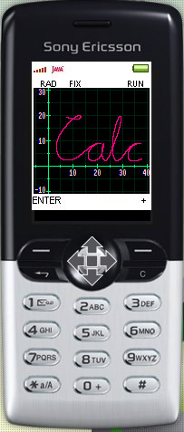
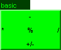
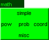
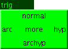
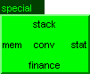
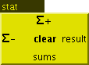
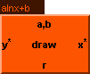

Calc - Java Calculator for cell-phones and MIDP devices

- Scientific
- Statistical
- Financial
- Programmable
- Graphing
- Complex arithmetic
- Matrix/vector arithmetic
- Unit arithmetic
- RPN
Current version: 4.50, change-log
Copyright: 2003-2008 Roar Lauritzsen, roarl at users sourceforge net
Demo: Click here
to open a demo applet for reference while reading the documentation
Development and patches: Join the development effort at http://sourceforge.net/projects/midp-calc,
where the source is available under the GPL license
Contribute: If you find this program useful, you can inspire
to future work by donating e.g. $10 here:


Introduction
Calc is a Java calculator for MIDP or J2ME devices, such as a
Java-enabled mobile phone or PDA. It was developed on a Sony Ericsson
T610, which was my first Java-enabled phone but which has such a
pitiful built-in calculator that I was compelled to develop this
application.
Calc works much like a good old HP calculator with RPN logic, but the
stack has 16 elements and you can see many of the elements on the stack
simultaneously. I have chosen to use RPN logic (Reverse Polish
Notation), because operating it requires less keys, you need only ENTER
instead of "(", ")" and "=". Additionally, being able to store and see
intermediate results on the stack is very advantageous.
Using the Real Java
floating point library, Calc has 63 bits internal precision, which
amounts to approximately 19 decimal digits accuracy, considerably
more than normal calculators and computers. The exponent is 31
bits, which allows for numbers up to
4.197·10323228496. Handy when you want to calculate the
factorial of 40000000.
Disclaimer
The Calc Java program is supplied "AS IS", without any guarantee of
operation, and without any responsibility for damages which may result
from usage. To summarize: I might be stupid. You too.
Download
You can download Calc into your phone or MIDP device using one of these
links:
http://midp-calc.sf.net/Calc.jad,
or
http://midp-calc.sf.net/Calc.jar
Different versions for different phones:
The Nokia version gives a fullscreen window and better
control of the command keys for "ENTER" and "+". The middle joystick
button is also handled correctly, so "dial" can instead be used as a
"clear" key. Many phones, such as SonyEricsson, support the Nokia
version and I actually prefer using this version on my K700i. The MIDP 2.0
version only gives access to the fullscreen mode so far, and this works
rather poorly, but you might prefer to switch to fullscreen
e.g. before you draw a graph. The Siemens version (only version 3.00 at this
point) is created by Michael
Schierl and remaps keys (as documented here)
for the Siemens A65. It might work on other Siemens phones as well.
http://midp-calc.sf.net/CalcNokia.jad,
-.jar
http://midp-calc.sf.net/CalcMIDP2.jad,
-.jar
http://midp-calc.sf.net/CalcSiemens.jad,
-.jar
Download instructions: If you have an internet (or wap) enabled
cell-phone, enter one of the above URL's while surfing. Try the ".jad"
URL first, if that doesn't work, then try the ".jar". If your device
is not internet enabled, you need a computer link with synchronization
software for your device. Download one of the above URL's to the
computer and add it to the synchronization software before
synchronizing. In the latter case I would probably try the ".jar" URL
first.
I have noticed one thing when upgrading with my SonyEricsson K700i,
which might apply to other phones as well. After downloading, the
phone says "The new version may be from another source. Trust
source?". If I don't answer "yes", the program memory is cleared.
→ → Older versions
Hardware compatibility
From version 3.00, the size of Calc exceeds 64kB. This means that on
some old phones, Calc won't work. For those users, there is always
version 2.08. From version 4.50, the size of the data used by Calc exceeds
128kB. Again, this means that some old phones don't work (among them the
good old Sony Ericsson T610). Try version 4.00 on these phones.
The following MIDP phones/devices have been tested with Calc v3.00 and later
versions:
- Sony Ericsson T6301, Z520i1,N,
Z6001, Z8001,2,N, Z1010, W600i,
W800i1,2,N, W810, W810i, W850i, K300i1, K510i,
K550i, K610i1,2,N,
K700i1,2,N, K750i, K800i, P1i1,N, P990i1,2,N: Tested OK
- Sony Ericsson M600i: Tested OK. Awkward entering of
numbers, ENTER and +, but the menu works fine using the touch-screen.
- Nokia 3220N, 32301,N, 5140i, 5500N,
6020N, 6060N, 6103,
6230i1,2,N, 6233N, 62651,N, 6300,
66001,N,
66301,N, 66701,N,
66801,2,N, 66811,N,
E601,2,N, N701,2,N, N73,
N801,2,N, N95N: Tested OK
- Nokia N-gage: Only showing half the screen
- Motorola Razr V31,
V180, V195, V220, V5471, V557, C380, C390, C650: Tested OK
- Siemens A651,S, C752,
SX11,N, AX72S, S65: Tested OK
- BenQ-Siemens EF81: Tested OK
- Samsung Z5001,2, SGH-D407, SGH-t519, SGH D600 SGH-X1001, X-820:
Tested OK
- Samsung E900: Tested almost OK. Problem with HEX input
- LG U8802: Tested OK
- Sharp 770sh1: Tested OK
- Palm Zire 72: Tested OK. By using IBM's WebSphere Everyplace Micro Environment it should run on every device that's supported by the VM, e.g. Palm's Tungsten T5, Tungsten E2, LifeDrive or Treo 650
1 works with the normal Midp 1.0 version
2 works with the Midp 2.0 version
N works with the Nokia version
S works with the Siemens version
(if nothing is specified, I have not received detailed enough information)
Please drop me a note about your experiences if you have tested Calc
on a device that is not on the list, or if your experiences were
different than what is listed. Remember that nearly all devices can
have different versions of "firmware" (the "operating system"), and
that upgrading the firmware at your local repair shop may improve many
compatibility issues.
(The phones are not sorted in any specific order)
User manual
- Table of contents:
- Keys
- Setup
- RPN logic
- Menu
- Operations
- Basic
- Math
- Trigonometric
- Bitwise operations
- Special
- Stack
- Memory
- Statistical
- Financial
- Conversions and
constants
- Time and date
- Unit arithmetic and conversions
- Scientific constants
- Mode
- Number
- Programming
- Base
- Monitoring
- System
- Notes
- Abnormal results
- Complex arithmetic
- Matrix arithmetic
- Unit arithmetic
- Financial calculation
- Date calculation
- Constants
- Programming
- Graph drawing
- Binary representation
- Monitor editing mode
Read this section at
least. To be able to navigate efficiently through
operation menus, Calc is best operated on a phone with a 5-way
"joystick" or equivalent arrow keys, plus a "clear" key, 12 number
keys and two soft-keys (those configurable keys below the
display). The keys are mapped as follows:
- 0-9: The number keys are used to enter numbers and as shortcuts
when activating operations that take a number argument ("STO", "FIX",
etc). In hexadecimal mode, you can enter the digits A-F by holding down the
keys 1-6 until the digit changes.
- * : This key is used to enter the decimal point.
- # : This key is used to enter a minus sign or an "e" for
exponent. (In HEX/OCT/BIN mode, the same key can be used to enter a
"/". This sign is used to prefix a negative two's complement number
and should be read as "an infinite number of 1-bits preceding the
number". Pressing the # key again exchanges the "/" with a normal
minus sign, indicating the input of a normal negative number
which will be converted to two's complement on ENTER.)
- clear, 'c': This key deletes the last digit in an entered
number, clears the lowest element on the stack, and backtracks
through menus.
- ENTER: This key finishes the currently entered number and puts
it on the stack. If no number is being entered, the lowest element
on the stack is duplicated.
- + : This key adds the two lowest elements on the stack.
- Joystick/arrow keys: Pressing the middle of the joystick
activates the menu. Pressing up/down/right/left on the joystick
activates the corresponding sub-menu directly (you don't need to
press the middle of the joystick first). Sub-menus are entered
by further navigation with the joystick until an actual operation is
activated. If your phone supports pointer input, you can also activate the
menu by clicking the middle of the screen.
- Hangup/Back: All devices have some key that exits the
application, most often it is called "hangup", "back", "return" or
has a symbol of some sort to this effect. On some devices,
e.g. K700i, you must press and hold the button for several
seconds. The state of the calculator will be saved in memory until
the next time.
To be able to use Calc on devices with fewer keys than the T610 (most
Nokias, that is), a couple of setup dialogs may appear the
first time Calc is started. If you don't answer these dialogs correctly the
first time, you can get to the setup dialogs again using the "reset"
command.
First, to make sure that "ENTER" and "+" is immediately available,
Calc will rotate through a set of command-key mappings until you
answer "yes" to the question if you see "no" mapped to the left
soft-key and "yes" mapped to the right soft-key simultaneously (These
keys are located left and right directly below the display). Some
phones may for instance map "yes" and "no" to a menu named "Options"
on the left side, with nothing on the right side. If you select "yes"
when such a mapping is active, your "ENTER" and "+" key will be
accessible in the same cumbersome manner. (In the Nokia version, this
screen is skipped.)
Second, to make sure that a "clear" or "c" key is available (and
recognizable by the application), you will be asked to press it. If
you do not have a "clear" key, press "#" instead - this will be your
clear key, and "*" will be used to magically enter both minus sign,
decimal point and exponent marker. On some Motorola phones the "menu"
button can be used as "clear".
(If you have downloaded the Nokia version, be extra careful at this
point. If your phone has a "joystick" or direction keys with an
extra button in the center, you can use "dial" (the green
button) as the clear key. In that case press "dial". If you don't have
a button in the center of your direction keys, you must use "dial" as
a replacement for the center button. In that case you don't
have a clear key, so press "#". You might be tempted to try pressing
"hangup" (the red button) to use that as a clear key, but in most
cases that just exits the application immediately, leaving the setup
unfinished. In that case, you can use the "mode/sys/reset" to access
the setup again.)
The third setup item is font selection. For color devices, Calc uses
sub-pixel anti-aliasing to improve the visibility of numbers displayed
on screen. However, some phones uses different pixel ordering (BGR
instead of RGB), and then the numbers may look strange. Select the
font that looks best on your device (beware that the commands "left"
and "right" may be mapped to the right and left command key
respectively, if you chose that setting in the first screen). Some
phones may have a 90 degrees rotated screen where the red, green and
blue color cells are stacked vertically instead of horizontally. There
is no support for such screens, so on these devices the numbers will
always look bit strange, unless you select the "system" font.
If your phone does not have a 5-way joystick, most times on Nokia you
can use the "dial" button instead of the middle joystick button. If
you only have a two-way joystick or none at all, the number keys 2, 4,
5, 6 and 8 will work as joystick keys once a menu is activated. In
that case, you can only hope that the menu will be activated by "dial"
or some other button, otherwise you will be stuck.
If you are familiar with RPN logic, e.g. from a HP calculator, skip
forward to the next section.
The basis for implementing RPN logic in this calculator is a stack of
numbers. The stack is initially empty, and when you write a number and
"ENTER" it on the stack, the stack grows upwards with the latest
entered number at the bottom of the stack. If you start to enter
another number, the numbers already on the stack jump up to make room
for the new number. To make the stack shrink, you can either clear the
lowest element on the stack using the "clear" key, or you can combine
the two lowest elements on the stack using a mathematical
operation.
The lowest element on the stack is called "x". In operations with one
argument, such as "sin", x is used as input and is replaced by the
result. The rest of the stack remains the same. The element above x on
the stack is called "y". In operations with two arguments, such as
+,-,* and /, the x and y stack elements are removed from the stack and
the result is placed on the stack instead, as the new x. The rest of
the stack moves down one step. Sometimes the element above y is called
"z".
For instance, to calculate 3+7, one would press the following sequence
of keys: 3, ENTER, 7, +. The result, 10, will now be the lowest
element on the stack, ready for further calculations. To calculate
3*(2+4), one would press the following sequence of keys: 3, ENTER, 2,
ENTER, 4, +, *. (To access the "*" operator, you really need to press
the key "↑" to enter the "basic" arithmetic menu, followed by
"←", to select the multiplication operator.)
This is what the display will look like as you enter the sequence of
keys above, assuming that you start with an empty stack:
Keystrokes: "3" "ENTER" "2" "ENTER" "4" "+" "*"
Stack: | | | | | | | |
| | | | | 3.00 | | |
y: | | | 3.00 | 3.00 | 2.00 | 3.00 | |
x: | 3_ | 3.00 | 2_ | 2.00 | 4_ | 6.00 | 18.00 |
Notice that you don't need to press "ENTER" after the "4" (but you
could), because the following "+" operation makes it clear that
you are finished keying the number. As you press "+", the 2 and the 4
are added to produce 6, and the 3 jumps down, ready for the "*"
operation.
A more thorough RPN tutorial can be found here, except that the
"ENTER" key works as in the HP RPL system.
Pressing the middle of the joystick activates the menu. You select
sub-menus by pressing one of the 5 joystick directions up, left,
right, down or middle. The next sub-menu will replace the previous
menu as you proceed. The following illustration shows the main menu
(light blue titled "menu") and the first level of sub-menus (minus the
"mode" sub-menu). In the case of the "special" sub-menu, the three
subsequent sub-menus activated by the right joystick button are
shown. Sub-menu entries are displayed in normal text and actual
operations are displayed in bold text. Through this hierarchical system,
more than 200 operations can be reached.
| |
 |
| |
↑ |
|  |
← |
 |
→ |
 |
| |
↓ |
| |
 |
| | |
→ |
 |
→ |
 |
→ |
 |
Once you've familiarized yourself with the layout, you don't need to
press the middle joystick button to activate the main menu. Pressing
up/down/right/left on the joystick without activating the main menu
first activates the corresponding sub-menu directly. In this way, you
can reach the most used "ENTER" and "+" operations in one
keyclick (they are not on the menu, but on soft-keys), and the rest
of the most basic operations, "-", "*", "/" and
"+/-" in just two keyclicks.
Some operations require a number argument ("STO", "FIX",
etc). When such an operation is activated, a two-level number menu is
entered, enabling the selection of a number between 0 and 15. When
this number menu is active, you can access the numbers 0-9 directly
using the number keys.
Since the middle joystick button can be a bit difficult to press,
care has been taken not to place the most used operations and
sub-menus on the middle button. Pressing "clear" (the button, not one
of the menu entries) while navigating the menus backtracks up one
level of menus.
The following operations are available through the menu system. Some
of the operations are explained more thoroughly in the notes section.
- - : Subtract x from y
- * : Multiply x and y
- / : Divide y by x
- +/- : Change sign of x
- repeat : As a shortcut, this menu position repeats
the last operation selected from one of the other menus. Some
operations (e.g. "clear stack/mem/stat/finance") will not be repeated
- Simple
- 1/x: Calculate the reciprocal of x
- x²: Calculate the square of x
- √x:
Calculate the square root of x
- % : Calculate x percent of y. This operation leaves y standing,
so you can add or subtract the result directly using + or -. To add
24% to 42, press "42", "ENTER", "24", "%", "+"
- %chg: Calculate percentage of change from y to x,
i.e. 100·(x-y)/y
- Power
- ex: Calculate the natural exponential
- ln: Calculate the natural logarithm
- yx: Calculate y to the power of x
- x√y: Calculate the x'th root of y
- 10x: Calculate 10 to the power of x
- log10: Calculate base-10 logarithm of x
- 2x: Calculate 2 to the power of x
- log2: Calculate base-2 logarithm of x
- Probability
- P y,x: Calculate number of permutations (ordered subsets)
when x elements is taken from a population of y
- C y,x: Calculate number of combinations (unordered subsets)
when x elements is taken from a population of y
- x! : Calculate the factorial of x. For non-integer values,
Γ(x+1) is calculated
- Γx : Calculate the gamma function
- erfc: Calculate the complementary error function,
1-erf(x), equal to the integral from x to infinity of
2/√π ·e-t² dt.
- erfc-1: Calculate the inverse erfc function
- phi: Calculate the normal distribution probability
density function (equal to erfc(-x/√2)/2).
- phi-1: Calculate the inverse phi function
- Matrix (*)
- new: Create new matrix with y rows and x columns
- concat: Concatenate matrix in y and matrix in x. Plain
numbers can be concatenated into row vectors
- stack: Stack matrix in y on top of matrix in x. Plain
numbers can be stacked into column vectors
- split: Split matrix in y at row or column specified by
x. If x is positive, matrix is split horizontally after x rows. If x
is negative, matrix is split vertically after -x columns
- det: Calculate determinant of matrix in x. (This
operation is just as slow as calculating the inverse by "1/x")
- Tr: Calculate the trace of matrix in x, i.e. the sum of
all the elements along the diagonal
- AT: Transpose matrix in x
- AT: Transpose and conjungate matrix in x
- |A|F: Calculate the Frobenius norm of matrix
in x, i.e. the square root of the sum of the squares of all the
matrix elements. For row and column vectors this calculates the
length of the vector
- size: Pushes the number of rows and columns of the
lowest matrix on the stack
- colx: Pops the column number off the stack, then
pushes a copy of the x'th column, taken from the lowest matrix on
the stack
- rowx: Pops the row number off the stack, then pushes
a copy of the x'th row, taken from the lowest matrix on the stack
- ayx: Pops the column (x) and the row (y) off
the stack, then pushes the element identified by this row and
column, taken from the lowest matrix on the stack
- amax: Finds the matrix element with the maximum
value, taken from the lowest matrix on the stack
- amin: Finds the matrix element with the minimum
value, taken from the lowest matrix on the stack
- Miscellaneous
- mod: Calculate y modulo x, i.e. subtract (or add) x
from y until the remainder is between 0 and x. Works the same for
negative x. Actually, y-x·floor(y/x).
- div: Complementary to mod it calculates how many times x
must be subtracted from y to get a remainder between 0 and
x. Actually, floor(y/x)
- random: Calculate a random number uniformly distributed
in the range [0.0, 1.0)
- factorize: Find greatest prime factor (of integer input
less than 2³¹). This factor and the original number
divided by the factor is placed on the stack... repeat! If input is
not integer, it is rounded. If input is too large, the result will
be nan (*). Factorizing
large random numbers is fun: Press "31", "2x", "random",
"*", "factorize", "factorize", ...
- Integer operations
- round: Round x to nearest integer
- ceil: Round x towards positive infinity
- floor: Round x towards negative infinity
- trunc: Remove fractional part of x (round towards zero)
- frac: Remove integer part of x, i.e. calculate x-trunc(x)
- Normal
- sin: Calculate the sine of x
- cos: Calculate the cosine of x
- tan: Calculate the tangent of x
- Arc
- asin: Calculate the arc sine of x
- acos: Calculate the arc cosine of x
- atan: Calculate the arc tangent of x
- Hyperbolic
- sinh: Calculate the hyperbolic sine of x
- cosh: Calculate the hyperbolic cosine of x
- tanh: Calculate the hyperbolic tangent of x
- Arc hyperbolic
- asinh: Calculate the arc hyperbolic sine of x
- acosh: Calculate the arc hyperbolic cosine of x
- atanh: Calculate the arc hyperbolic tangent of x
- More
- R→D→G: Rotate between radians, degrees and grads as
measure of angles. 2π radians = 360 degrees = 400 grads.
- →RAD: Convert from degrees to radians
- →DEG: Convert from radians to degrees
- π: Enter the number π
- Rectangular/polar coordinates
- r→p: Convert rectangular coordinates (x,y) to polar
(x=radius, y=angle)
- p→r: Convert polar coordinates (x=radius, y=angle) to
rectangular (x,y)
- atan2: Calculate the arctangent of y/x, in
the range -π to π (or -180 to 180 in DEG mode, -200 to 200 in
GRAD mode)
- hypot: Calculate √x²+y²
- r→cplx: Convert rectangular coordinates
(x=re, y=im) to complex number
- Complex numbers (available instead of coordinate menu if x or y
is complex) (*)
- cplx→r: Convert complex number to rectangular
coordinates (x=re, y=im)
- abs: Calculate absolute value (complex modulus) of
complex number
- arg: Calculate angle (complex argument) of complex
number in the range -π to π (or -180 to 180 in DEG mode,
-200 to 200 in GRAD mode)
- conj: Calculate complex conjugate
- and: Calculate bitwise AND of x and y
- or: Calculate bitwise OR of x and y
- xor: Calculate bitwise XOR of x and y
- bic: Bit-clear, clear all bits from y that is set in x,
i.e. calculate y AND NOT x
- y<<x: Shift up y by integer number of bits in x
- y>>x: Shift down y by integer number of bits in x
- not: Invert all bits in x. Fractional bits are ignored,
i.e. the calculated value is x XOR -1
- Stack
- LAST x: Recall value of x before last operation
- undo: Undo previous stack operation. Memory, statistical and
financial operations, in addition to clear stack, cannot be
undone. In operations involving both stack and one of the other
modules, such as x↔mem, only the stack is restored
- x↔y: Exchange x and y elements of the stack
- rolldn: Roll stack down (rolling with as many elements
as is currently in the stack)
- rollup: Roll stack up
- RCL st#: Copy any stack location into x
- x↔st#: Exchange x with any stack element (y is element 1)
- move dn#: Move down any stack location into x. This is
equivalent to a rollup operation where only the (n+1) lowest stack
elements are involved.
- move up#: Move x up to any stack location. This is equivalent
to a rolldn operation where only the (n+1) lowest stack elements are
involved.
- clear: Clear the stack
- Memory
- STO: Store x in memory location
- STO+: Add x to memory location. (Useful with memory
monitoring for keeping score in a game ;-)
- RCL: Recall memory location
- x↔mem: Exchange x with any memory location
- clear: Clear memory
- Statistical
- Σ+ : Add x and y to statistics
- Σ- : Subtract x and y from statistics
- clear: Clear statistics
- Results
- average
- x,y: Calculate mean x
and mean y values, i.e. Σx/n
- xw:
Calculate mean of x values weighted by the y values,
i.e. Σxy/Σy
- sx,sy: Calculate sample standard
deviation of x and y values, i.e. [Σ(x-x)²/(n-1)]½
- Sx,Sy: Calculate population standard
deviation of x and y values, i.e. [Σ(x-x)²/n]½
- draw: Draw data points and plot average
- Linear regression: y=ax+b
- a,b: Calculate coefficients, x=a, y=b
- y*: Calculate estimated y for current x
- x*: Calculate estimated x for current y
- r: Calculate correlation coefficient
- draw: Draw regression curve along with data points
- Curve fitting: y=a·lnx+b
- a,b, y*, x*, r:
(see linear regression)
- Curve fitting: y=b·eax
- a,b, y*, x*, r:
(see linear regression)
- Curve fitting: y=b·xa
- a,b, y*, x*, r:
(see linear regression)
- Sums
- n: Recall number of statistics entered
- Σx: Recall sum of x'es
- Σx²: Recall sum of squared x'es
- Σy: Recall sum of y's
- Σy²: Recall sum of squared y's
- Σxy: Recall sum of x·y product
- Σlnx: Recall sum of lnx
- Σln²x: Recall sum of ln²x
- Σlny: Recall sum of lny
- Σln²y: Recall sum of ln²y
- Σxlny: Recall sum of x·lny
- Σylnx: Recall sum of y·lnx
- Σlnxlny: Recall sum of
lnx·lny
- Financial (*)
- STO: Store x in financial register (pv, fv, np, pmt, ir%)
- RCL: Recall financial register (pv, fv, np, pmt, ir%)
- solve: Solve one financial value with respect to the
others
- pv: The present value in an account
- fv: The future value after a certain number of
payment periods
- np: The number of payment periods
- pmt: The amount of each periodic payment
- ir%: The interest rate on the account per period
(in percent)
- clear: Clear financial registers
- END/BGN: Switch between end of month payments and beginning of
month payments
- y%*x: Interest multiply. Convert from nominal x-times-a-year
(e.g. monthly) interest rate to effective annual rate
- y%/x: Interest divide. Convert from effective annual interest
rate to nominal x-times-a-year rate
- Conversions and constants
- Time and date (*)
- →H: Convert x, interpreted as date, hours, minutes and
seconds (format yyyymmddHH.MMSS) to hours. If year (yyyy)
is zero, the format is instead understood as ddddHH.MMSS, where
dddd is number of days.
- →DH.MS: Convert x from hours to date, hours, minutes and
seconds. If x ≤ 8784 hours, it is instead converted
to the format ddddHH.MMSS, where dddd is the number of
days.
- now: Get current date and time in DH.MS
format. Useful to remind yourself how this format is
- time: Get current time only in DH.MS format
- date: Get current date only in DH.MS format
- DH.MS+: Add x and y as date, hours, minutes and
seconds
- DH.MS→unix: Convert from yyyymmddHH.MMSS format
to unix time
- unix→DH.MS: Convert from unix time to
yyyymmddHH.MMSS format
- DH.MS→JD: Convert from yyyymmddHH.MMSS format
to Julian Day
- JD→DH.MS: Convert from Julian Day time to
yyyymmddHH.MMSS format
- DH.MS→MJD: Convert from yyyymmddHH.MMSS format
to Modified Julian Day
- MJD→DH.MS: Convert from Modified Julian Day time to
yyyymmddHH.MMSS format
- Unit arithmetic and conversions (*)
- unit*: Multiply x with a unit selected from one of the
submenus (listing):
- spatial: Submenu containing units with length as the
primary factor; length, area, volume, speed and acceleration.
- firm: Submenu containing units with mass as the
primary factor; mass, force, energy, effect and pressure.
- other: Submenu containing other units; time, temperature, chemical
and electric.
- unit/: Divide x by a unit selected from a submenu.
The unit submenus are the same as for unit*.
- →unit: Convert the unit of x (as far as possible) to the
unit selected from a submenu. The unit submenus are the same as
for unit*, with the following additions:
- SI: Convert to base SI units.
- US/Imp: Convert to base US/Imperial units, using lb and ft
for mass and length respectively.
- clear: Clear the unit from the number in x
- describe: Describe why the unit of the number in x shows as
"[err]" or describe if it is a composite built up from more basic units.
- Scientific constants (*)
- Universal
- c: Enter the speed of light in a vacuum
≡ 299792458 m/s
- h: Enter the Planck constant
≈ 6.62606896·10-34 J·s
- µ0: Enter the permeability of a vacuum,
≡ 1.256637061435917...·10-6 N/A²
- ε0: Enter the permittivity of a vacuum
≡ 8.854187817620390...·10-12 F/m
- Chemical
- NA: Enter the Avogadro constant
≈ 6.02214179·1023 mol-1
- R: Enter the molar gas constant
≈ 8.314472 J/mol·K
- k: Enter the Boltzmann constant
≈ 1.3806504·10-23 J/K
- F: Enter the Faraday constant
≈ 96485.3399 C/mol
- Physical and electromagnetic
- α: Enter the fine-structure constant
≈ 0.0072973525376
- R∞: Enter the Rydberg constant
≈ 10973731.568527 m-1
- a0: Enter the Bohr radius
≈ 5.2917720859·10-11 m
- µB: Enter the Bohr magneton
≈ 9.27400915·10-24 J/T
- Atomic
- e: Enter the elementary charge
≈ 1.602176487·10-19 C
- me: Enter the mass of an electron
≈ 9.10938215·10-31 kg
- mp: Enter the mass of a proton
≈ 1.672621637·10-27 kg
- mn: Enter the mass of a neutron
≈ 1.674927211·10-27 kg
- mu: Enter the unified atomic mass unit
≈ 1.660538782·10-27 kg
- Astronomical
- G: Enter the Newtonian constant of gravitation
≈ 6.67428·10-11 m³/kg·s²
- gn: Enter the standard acceleration of gravity
≡ 9.80665 m/s²
- A.U.: Enter the length of one astronomical unit
≡ 149597870691 m
- l.y.: Enter the length of one light year
≡ 9460730472580800 m
- pc: Enter the length of one parsec
≡ 3.085677581305729...·1016 m
- guess: Guess and display the formula for the number in
x. The calculated guess is pushed on the stack. This function can
guess formulas of the following types: a/b, √a/b,
(a/b)(1/3), aπ/b, aπ²/b, a/(bπ),
a/(bπ²), e(a/b), 2(a/b), ln(a/b) and
log2(a/b), where a and b are integers less than
2³¹. The probability estimate is only correct given that no
other type of formula fits even better, such as
(a±√b)/c.
- Number
- normal: Set normal number mode, shows all digits but removes
trailing zeros
- FIX: Set fixed-decimal number mode, shows a fixed number of
digits after the decimal point
- SCI: Set scientific number mode, shows a fixed number of
digits after the decimal point in scientific format
- ENG: Set engineering number mode, shows a fixed number of
digits after the decimal point in engineering format, i.e. exponent is a
multiple of 3
- Separators
- point
- . : Display the decimal point as a period
- , : Display the decimal point as a comma
- keep: Keep the decimal point even if no fraction is shown
- remove: Remove the decimal point if no fraction is shown
- thousand
- . or , : Display thousands separator as period or comma
(depending on decimal point)
- space: Display thousands separator as space
- ' : Display thousands separator as '
- none: Display no thousands separator
- Programming (*)
- new: Start entering a new program
- append: Append commands to an existing program
- run: Run a program
- clear: Clear a program
- draw y=f(x): Draw program function y=f(x). Prior to
using this operation, you should enter xmin,
xmax, ymin and ymax on the stack,
in that order. See note on graph
drawing.
- draw r=f(θ): As above, but this time the program
calculates a polar graph r=f(θ), where the input is the angle
and the output is the radius. Input will be in range [0,20π],
i.e. 10 "rounds".
- draw z=f(t): As above, but this time the program
calculates a parametric curve z=f(t), where the input t is in the
range [0,1] and the output is a point in the (complex) plane
- draw z=f(z): As above, but this time the program
calculates a complex number zo=f(zi), where
the input zi is a complex point in the plane delimited by
xmin, xmax, ymin and
ymax. For each point in the plane, the result is drawn so
that the intensity varies according to the absolute of zo
modulo 1, and the color varies according to the the angle (complex
argument) of zo.
- integrate: Integrate program function f(x). Prior
to using this operation, you should enter the integration limits a
and b, and the desired accuracy on the stack, in that
order. a and b may be complex
- diff.: Differentiate program function f(x). Prior
to using this operation, enter the x you want to differentiate for,
which may also be complex
- solve: Solve program function f(x), i.e. find a root
where f(x)=0. Prior to using this operation, enter two
limits x1 and x2 on the stack, so that
f(x1)·f(x2)<0
- min/max: Find local minima or maxima in program
function f(x). Prior to using this operation, enter two
limits x1 and x2 on the stack, so that at the
mid-point between x1 and x2, the function
f((x1+x2)/2) is either greater or less than
both f(x1) and f(x2).
- Programming 2 (available while entering a new program)
- finish: Finish entering current program
- reset: Reset the current program (purge and start from
beginning)
- Flow control (when recording a program, these operations will have no
effect whatsoever)
- Label related operations
- LBL: Set label. The label, numbered 0-15, can used as a
destination for GTO or GSB from somewhere else in the
program.
- GTO: Goto label. Program execution jumps to the specified
label and continues. In case of multiple matching labels, the
label to go to is first searched for forwards in the program. If the
label is not found, the program is searched backwards from the
GTO instruction until the label is found. If no label is
found, the program terminates with an error message.
- GSB: Goto subroutine. This operation is similar to
GTO, except that the current position in the program is saved,
so that a subsequent RTN instruction will return the program
to the current position to continue execution. Recursive GSB
operations are permitted, up to 16 levels deep.
- RTN: Return from subroutine. Continues execution from the
next operation following the last GSB operation. If there has
been no previous GSB operation executed, program execution
will instead stop.
- STOP: Stop program execution. If the program is used e.g. in
an integration operation, the current value of x will be used as the
output of the program, and the integration itself will not stop.
- Looping operations
- ISG: Increment, skip if greater. The specified memory
location is interpreted as a counter, according to the format
ccccc.fffii, where ccccc is the current counter
value, fff is the final counter value, and ii is
the increment. When the operation is executed, the value of
ccccc is incremented by ii, and if ccccc
is then greater than fff, execution skips the next line of
the program and continues. If ii is 00, an increment of 01
will be used instead.
- DSE: Decrement, skip if equal. The specified memory location
is interpreted as a counter as with ISG, but instead of
incrementing, ccccc is decremented by ii, and if
ccccc is then equal to (or less than) fff,
execution skips the next line of the program and continues.
- Comparing x and y
- x=y?: Execute next program line only if x exactly equals y,
otherwise program execution skips the next line of the program and
continues.
- x!=y?: Execute next line if x does not equal y,
otherwise skip
- x<y?: Execute next line if x is less than y,
otherwise skip
- x<=y?: Execute next line if x is less than or equal
to y, otherwise skip
- x>y?: Execute next line if x is greater than y,
otherwise skip
- Comparing x and 0
- x=0?: Execute next line if x exactly equals 0,
otherwise skip
- x!=0?: Execute next line if x does not equal 0,
otherwise skip
- x<0?: Execute next line if x is less than 0,
otherwise skip
- x<=0?: Execute next line if x is less than or equal
to 0, otherwise skip
- x>0?: Execute next line if x is greater than 0,
otherwise skip
- Utility operations for programming
- abs: Calculate absolute value of x
- max: Select maximum value of x and y
- min: Select minimum value of x and y
- select: Select y or z based on x, i.e. calculate
x·y+(1-x)·z. When selection criterion x exactly equals 1 or
0, y or z is copied directly instead of calculating it. This enables
selecting away inf's and nan's.
If x contains a square matrix, X·Y+(I-X)·Z is calculated.
- sgn: Keep only the sign of x as ±1. With this you can
e.g. simulate "abs" by pressing "ENTER", "sgn", "*". Also ±0 becomes ±1
- Indirect memory operations for programming
- RCL[x]: Recall memory location indirectly, using x as index (must be between 0 and 15).
- STO[x]: Store y in memory location indirectly, using
x as index.
- STO+[x]: Add y to memory location indirectly, using x
as index.
- Base (*)
- DEC: Set decimal (base-10) number mode
- HEX: Set hexadecimal (base-16) number mode
- BIN: Set binary (base-2) number mode
- OCT: Set octal (base-8) number mode
- Monitoring (*)
- mem: Monitor first n memory locations in upper part
of the display
- stat: Monitor first n statistical registers
- finance: Monitor financial registers
- matrix: Monitor n rows from the lowest
matrix on the stack
- off: Turn monitoring off (equivalent to set a monitor to display n=0 lines).
When in program recording mode, this command is replaced by:
- prog: Activate the program editing monitor (monitor n
consecutive lines of the program)
- System menu
- Fonts
- number: Select number font from the submenu:
- small: Small built-in font
- medium: Medium built-in font
- large: Large built-in font
- xlarge: Extra large built-in font
- xxlarge: Extra extra large built-in font
- xxxlarge: Extra extra extra large built-in font
- sys.S: Small system font
- sys.M: Medium system font
- sys.L: Large system font
- menu: Set menu font. Same submenu as for number font.
(Although it is possible to select, the "small" font is not
suitable for use in menus.)
- monitor: Set monitor font. Same submenu as for number font
- fullscreen: Toggle full screen operation (supported only by
MIDP 2.0 version)
- ver.: Enter the current version number on the stack
- exit: Exit the application. The the stack, memory,
statistics, finance and programs will be saved until next time
- reset: Reset the application and exit. All setup
information, all values saved in the stack, memory, statistics,
finance and all programs will be erased. You will be asked for a
confirmation. Use this operation if you have gone through the setup
dialogs and picked the wrong settings
The calculator implements infinities and nan following the
IEEE754 logic. It is impossible to enter abnormal numbers through the
keyboard, but they are easily obtained by calculation. If an operation
produces a result larger than the largest representable number, an
infinity value is generated, and "inf" or "-inf" is displayed. If an
operation produces a result smaller than the smallest representable
number, zero is generated. To be able to use this result properly in
further calculations, the number "-0" may also be produced. If an
operation is undefined, a nan value is produced and "nan" is
displayed (not-a-number).
Abnormal numbers are often fine to use in further calculations. In
most cases where the final result would be meaningful, abnormal
numbers accomplish this. For instance, atan(inf)=pi/2,
1/inf=0, etc. In most cases where the final result is not
meaningful, a nan will be produced. Additionally,
nan is used to indicate "bad input parameters" or "failure
to obtain a valid result" from an algorithm implemented in the
calculator, e.g. factorizing.
Examples of operations with abnormal numbers are:
1/0 = inf
1+inf = inf
1*inf = inf
0/0 = nan
0*inf = nan
inf/inf = nan
inf-inf = nan
1/inf = 0
-1*0 = -0
Any operation involving nan produces nan, except
nan to the power of
0:
nan^0 = 1
The calculator creates complex numbers automatically when you try to
use the "√x"
operation on a negative number, or when another operation requires a
complex result. Alternatively, a complex number can be created from x
and y using the "r→cplx" operation.
Most operations that logically extends to complex arguments have been
implemented for complex numbers, i.e. all basic operations, all simple
operations except "%chg", all power operations and all trigonometric
operations. For convenience, integer operations (rounding and
truncation) work on the real and imaginary part of the complex number
separately.
All stack and memory operations handle complex numbers
transparently. Financial and statistical modules cannot store complex
numbers, so with these modules only the real part of the numbers are
stored/used. Any operations that are undefined for complex numbers or
that have not been implemented yet, returns nan when used
with complex input(s).
If either x or y contains a complex number, any operation in the
"coord" sub-menu is undefined (the sub-menu dealing with
rectangular/polar coordinates). In this case the "coord" sub-menu is
exchanged with a sub-menu called "cplx" for dealing with complex
numbers.
Complex numbers are (like the value nan) unordered, i.e. you cannot
say in a general way that "this complex number is less than that complex
number". Consequently, any comparison operations (e.g. "x<y?" when
programming) behave as the condition does not hold if any of the arguments are
complex. Similarly, "min" or "max" operations will return nan.
Complex operations work strictly in radians, so when the input is
complex (i.e. it has a non-zero imaginary part), operations involving
the angle of the complex number (i.e. most trigonometric and
power functions) will automatically cause a switch from degrees (DEG)
or grads (GRAD) to radians (RAD).
Complex numbers are displayed on one line as e.g. 2+3i. Since two
numbers are displayed simultaneously, the display may not be wide
enough to display both numbers if you are using a large font and the
numbers have large exponents. Instead "*****" will be
displayed. Don't worry, the number is still there, but you have to
switch to a smaller font or perform a "cplx→r" operation on the complex
number to view it.
Matrices can be created using the "matrix/new" operation or by using the
operations "matrix/stack" and "matrix/concat" to combine two normal
numbers.
Most operations that logically extends to matrix arguments have been
implemented for matrices, i.e. all basic operations, "1/x" and
"x²", and yx for integer x.
All stack and memory operations handle matrices
transparently. Financial and statistical modules cannot store
matrices, so with these modules a matrix is treated as
nan. Any operations that are undefined for matrices or that
have not been implemented yet, returns nan when used with
matrix input(s).
Matrices are displayed on one line as e.g. M:[3x4]. This indicates a
matrix of 3 rows and 4 columns. A 1x1 matrix is automatically
converted to a normal number.
There are two methods for filling a matrix with numbers. In the first
method, you enter the two first numbers of the matrix and then either
"matrix/concat" or "matrix/stack" the two numbers into a row or column
vector. Continue concating or stacking more numbers until your first
vector is complete. Then do the next vectors. Finally, you either
stack together your row vectors or you concat together your column
vectors until the matrix is complete. If you use the "repeat"
operation on the basic menu this method requires the fewest button
clicks.
Alternatively, you can create an empty matrix by "matrix/new", and
then press "mode/monitor/matrix" to edit the matrix (see (*)). When monitoring is
active you can go into the monitor area by pressing the middle button
from the "basic" menu. If you enter a number on the stack before you
go into the matrix, you can press the middle button again to move this
number from the stack into the highlighted matrix element. This brings
you out of matrix editing again and you can enter a new number. Repeat
this (number, up-middle-middle) until the matrix is complete. This
method requires a few more button clicks, but it is more visual.
Matrix limitations: There are a few limits to the size of the
matrices that can be used in the calculator. You cannot create
matrices with "new" with more than 65536 rows or columns. Even if you
manage to create an even larger matrix than this by concatenating or
stacking such matrices, the matrix would not be saved when the
calculator exited. Due to a limitation when storing programs, matrix
element editing (through the matrix monitor) of elements beyond column
64 or row 128 will not be stored in a program.
Apart from these limitations in the program itself, it is the
limitations of the host (i.e. you phone) that may be the most
severe. When creating especially large matrices you may experience
"Out of memory error". If you get this, is advised to exit the program
to avoid further errors which may be caused by this. There may also be
a limit to how much matrix data the calculator can save when you
exit. If the calculator was unable to save all the matrices, some of
your matrices will be replaced by nan when you start up
again.
Matrices are stored by reference, so copying a matrix many times on
the stack or in memory does not consume memory, it only copies the
reference. However, changing a matrix will create a new matrix, even
for such a simple operation as "+/-". Since the old matrix is still
backed up in "LAST x" you are temporarily using twice as much memory
as with just the one matrix.
Numbers with units can be created by entering a normal number and setting a
unit using one of the operations "conv/unit*" or "conv/unit/"
(i.e. unit-multiply and unit-divide respectively). Scientific constants will
automatically appear with their proper SI unit.
Unit arithmetic works for most operations that logically extend to arguments
with units, i.e. all basic operations, simple operations, and yx
and x√y for
integer x. Matrices can not have units, but complex numbers can (e.g. when
calculating electric potential, V).
All stack and memory operations handle units transparently. Financial and
statistical modules cannot store units so with these modules the units are
ignored. For operations that are undefined for units or that have not been
implemented yet, the units are also ignored.
The calclator supports many different units, also different units for the same
physical property. For instance, there are 13 different units for length. All
units are composed of, and can be reduced to 6 base units; length, mass, time,
temperature, charge and the chemical unit "mol".
A particular unit may contain several base units raised to varying powers (e.g
"m/s²"), and for each base unit a particular unit variant (e.g. "kg" or "lb"
for mass) will be in use. A unit may also contain powers of higher order
units. A higher order unit is a unit that represents a composite of more than
one base unit, but cannot be decomposed to the base units without a conversion
factor. For instance, an "acre" represents "length" raised to the power of 2,
but it is not composed of any particular "length" unit such as "m". As with
the base units, there can be variants of a higher order unit as well, for
instance there are 12 higher order units that all represent "volume". The
calculator contains as many unit variants and higher order units as has been
practically attainable.
It is possible to do do arithmetic on numbers with different units, but it may
be necessary to reconcile the units before the calculation can take place. If
an operation takes two arguments and the units of x and y are different, the
unit of y is first converted to the unit of x. Then the value of y is scaled
according to the ratio of the unit conversion before the operation is
executed.
For operations that require the same type of unit in x and y, e.g. addition,
the unit of y must be fully converted to the unit of x. If this is not
possible, the operation takes place as if the units were not present, and the
unit of the result is displayed as "[err]". For other operations,
e.g. multiplication, only the parts of the units that represent the same
physical property will be reconciled. For instance, "1 m/s" in y,
multiplied by "1 h" in x, becomes "3600 m", since y is first
converted to "3600 m/h".
Units are displayed directly behind the numbers on the stack. For brevity, if
a unit contains more than one base unit raised to a negative power, the units
are joined by a "·" after the "/" without surronding parentheses, e.g
"8.314472 J/mol·K" (meaning "J/(mol·K)"). Additionally, when displayed,
many common unit combinations will be reduced and replaced with a symbol
representing a composite unit. For instance, the unit "kg·m²/s²" will be
displayed as "J", without actually changing the existing unit into a "higher
order" unit or anything. More complex units may be reduced several times
before they are displayed. The logic behind this reduction tries to construct
the most compact form while maximizing the meaning of the displayed form. For
instance, the unit "kg/s³" is displayed as "W/m²", because square meters are
more logical than cubic seconds. It is possible to see which base units a
reduced unit represents by using the operation "conv/unit/describe".
Imperial units that have the same spelling as an American unit are presented
in the menus and displayed on screen in italics. These units
are ton (long ton), fl.oz, cup, pt
and gal. Similarly, the symbol for the standard gravity g is
displayed in italics (as usual) to distingtuish it from the symbol for
gram.
Limitations: For each base unit and higher order unit, there is a limit
to the power that a particular unit can be raised to. For instance, "length"
can be raised to the power of ±8, since it commonly occurs at least as high as
±3 in normal calculations. On the other hand, it makes less sense to raise
"mol" to higher powers, so with this unit the limit is ±2. If a unit
calculation results in a base unit raised a power that is too high, "[ofl]" is
displayed. Additionally, no unit can be displayed with higher power
than ±4, and will also be displayed as "[ofl]", although further calculations
may bring the power down and make the unit displayable again.
When a unit error or overflow has occurred, the unit is displayed as "[err]"
or "[ofl]", respectively. If such a unit is used in combination with another
unit, the result will also be "[err]". On the other hand, if an "[err]" or
"[ofl]" unit is combined with another "[err]" or "[ofl]" unit, or is combined
with a number without a unit, the unit will simply "evaporate" and
disappear.
SI prefixes such as "k" for "kilo-" and "m" for "milli-" are not generally
supported for all units, just in some special cases due to common usage. It is
worth noting that most prefixed units, such as "kW", are "higher order" units
in the same manner as "hp", and will usually survive intact (i.e. not be
decomposed) in calculations. For instance, "1 kW" multiplied by
"2 h" becomes "2 kW·h". On the other hand "W" is a "reduced" unit;
simply a shorter way of displaying the underlying unit "kg·m²/s³". When
multiplying "1 W" (in y) by "2 h" (in x), the unit factor
"s-3" of "W" is first converted to "h" before the multiplication
takes place, resulting in the surprising value
"93312000000 kg·m²/h²". This may seem strange, but this is an unfortunate
byproduct of how unit arithmetic has been implemented, and will often lead to
unexpected results when calculating with non-SI units. Use
"conv/→unit SI" to see the more familiar result "7200 J". It is
impossible to make the calculator show the result as "2 W·h", since it would
require two conflicting time units, "s" and "h", being present in the unit at
the same time. For the same reason it is very confusing, but not impossible to
find out how much one mile per gallon corresponds to in liters per
kilometer.
Here is a complete listing of all the units.
Remember to use negative values for owed balances and money paid to
the account, positive values for balances in your favor and money
withdrawn from the account. Also enter the interest rate per period,
not per year. If you are making monthly payments and have an annual
interest rate, divide the annual rate by 12 (*). Thus, one period of
an 8% annual rate is 8/12=0.6666%.
[* This business of dividing an interest rate by 12 is not
mathematically correct, but since the banks use this procedure it is
wise to do it also, otherwise your numbers will not agree with those
of the bank. To calculate the nominal monthly interest rate from an
effective annual interest rate, use the "y%/x" operation, which
actually calculates 100·(x√1+y/100 - 1).]
If you solve repeatedly and successively for each of the financial
registers, the values may start to drift away from the original values
because of inaccuracies during the calculations.
The calendar implemented by the DH.MS operations is strictly
Gregorian, which did not take effect until 1582 in Catholic states and
not until 1752 in Britain and her colonies (including the United
States). Dates before these years will be extrapolations of the
Gregorian calendar and will not match the Julian calendar of the
time.
When converted to hours, a date is represented by the number of hours
since the imaginary date January 1st year 0 (in the extrapolated
Gregorian calendar). Negative dates are not interpreted as years BC,
but are instead represented as a negative amount of time equal in
magnitude to the date interpreted as a positive number. In this way,
you can subtract dates by entering a negative date and using
"DH.MS+". However, it is impossible to extrapolate the Gregorian
calendar to years BC.
When converting from date-time format (yyyymmddHH.MMSS) to hours,
several checks are performed. If year (yyyy) is zero (i.e. input is
less than 1000000), the date-time format is instead interpreted as the
days-time format ddddHH.MMSS, where dddd is the number of
days. When
you convert from hours back to date-time format, it is enough that the
number of hours is greater than 8784 (i.e. 24 hours times 366, number
of days in year 0) for the converter to switch back to yyyymmddHH.MMSS
format. This means that for dddd between 366 and 9999, converting from
ddddHH.MMSS to hours and back again will not yield the original
input.
Beware that you must specify the year with all four digits. If you
specify a year with two digits only, you will be calculating dates in
a Gregorian calendar extrapolated to the years AD 1-99 (*). As an
intermediate result such dates are fine (e.g. a time interval,
resulting from a DH.MS+ operation with one negative operand), but the
result should be converted to hours or added to a proper date before
it is meaningful. If an intermediate result like this represents a
time interval less than one year, it will be converted to the form
ddddHH.MMSS, where dddd is the number of days. Do not worry,
this form will interpreted unambiguously in further calculations with
DH.MS+.
[* leap years in this period matches leap years in the period
1900-1999, so you may get away with it. On the other hand, the year
100 (in the extrapolated Gregorian calendar) was not a leap
year while the year 2000 was.]
If year is nonzero, and month (mm) is zero, the month will be
interpreted as 1 (January). If day (dd) is zero, it is interpreted as
1 (the 1st of the month). If seconds (SS) is greater than 59, the
number is interpreted as that many seconds into the next minute. If
minutes (MM) is greater than 59, the number is interpreted as that
many minutes into the next hour. If hours (HH) is greater than 23, the
number is interpreted as that many hours into the next day. If day
(dd) is greater than the number of days in a month, the number is
interpreted as that many days into the next month (or the months
after). If month is greater than 12, the number is interpreted as that
many months into the next year(s) (unspecified how many days there are
in each of those months). E.g. the number 2003000000 is understood as
January 1st, 2003, at 00:00.00. The number 1403.5901 is understood as
14 days, 3 hours, 59 minutes and 1 second. Unfortunately, the number
1.9999 is understood as 1 hour, 99 minutes and 99 seconds, actually
2.6775 hours, considerably more than 2 hours (if that was
intended).
Because a date-time value is represented with many digits, inexact
intermediate representation may cause inaccuracies to escalate. To
alleviate this, some magic rounding has been implemented so that
e.g. 99 minutes and 99.999 seconds is instead interpreted as 1 hour, 0
minutes and 0.000 seconds. This will catch a majority of the problems
that may occur.
The calendar conversions routines were taken from http://www.fourmilab.ch/documents/calendar/
Relation to Unix time
Unix time measures seconds since midnight (00:00 UTC) on January 1st,
1970. Many operating systems and languages (including Java) use this
time scale, although many use a local time zone instead of UTC. Use
"DH.MS→unix" and "unix→DH.MS" to convert dates to/from this
time scale.
Relation to Julian Days
Astronomers often use Julian Day or Modified Julian Day as a practical
format for doing arithmetic with dates. The Julian Day is the number
of days elapsed since noon on Monday, January 1st 4713 BC (in the
Julian calendar). Use "DH.MS→JD" and "JD→DH.MS" to convert
dates to/from this time scale.
The Modified Julian Day is the number of days elapsed since midnight
(00:00 UTC) on November 17, 1858. Use "DH.MS→MJD" and
"MJD→DH.MS" to convert dates to/from this time scale.
Beware that this calculator has no notion of time zones, it takes
whatever value the Java environment returns (through
System.currentTimeMillis()). If you are in a different time zone than
UTC, you may have to add or subtract some hours to get a perfect unix,
JD or MJD time value.
The constants were found at http://physics.nist.gov/cuu/Constants.
Constants given using "≡" are as accurate as the internal precision
of Calc. Constants given using "≈" are not precisely known by
science, but are as up-to-date as the CODATA internationally
recommended values of 2006.
When monitoring is active, the usual repeat operation in
the "basic" menu is exchanged with the symbol [→]. Selecting
this operation lets you enter the monitor area in the upper part of
the screen, where one monitor element will be highlighted. You can
then move about in the monitor area using the arrow keys. The normal
commands, "ENTER" and "+" will be replaced with "STO" and "RCL".
Pressing "STO" in this mode will copy x into the current monitor
element. Pressing "RCL" in this mode extracts the current monitor
element and pushes it on the stack. Pressing the middle joystick
button pops one element off the stack, stores it in the current
monitor element, and exits the editing mode so you can enter or
calculate the next number. All these operations also have the side
effect of advancing to the next monitor element below (or in the next
column if you are at the bottom). Pressing "clear" will exit the
editing mode.
(Programming is found on the "mode" menu because it was added last and
I couldn't find a spot for it anywhere else. Despite this, not all
operations reached from this menu are "mode-like".)
As of version 4.00, Calc is fully programmable with control flow and
looping. When program recording has been activated (i.e. after
executing "prog/new" or "prog/append"), all activity is recorded in the current
program, but the calculator looks and behaves exactly as before except
a "PRG" indicator to the upper right. There is no limit to the size of
a program, but beware, do not leave Calc in programming mode (look for
the "PRG" indicator), because Calc will eventually run out of
memory, giving the "Out of memory error".
Using the "undo" operation does not remove any
statements from the program, it only adds the "undo" operation to the
program as well. Instead, use the program editing mode described below to
remove an operation. Advice: If your program is complex, plan the steps
beforehand on a piece of paper.
Programs can be viewed or edited using the program editing monitor
command: "monitor/prog":
The program editing monitor can be used to view or edit programs. Note
that the program editing monitor can only be accessed in the
programming mode and as usual the number of lines to display have to
be chosen. As the other monitor modes, it has a display mode and an
editing mode (accessed by the [→] command). In the display
mode, the active line is marked by a green ">" after the line number. In
the display mode, all commands recorded will be inserted at this
marked position. After activating the editing mode, the inseration
mark is at the end of the program, so all new instructions will be
appended to the program. When the editing mode is entered, the mark
can be moved using the joystick (up/down, left=page up, right=page
down). In the editing mode, the softkeys have the following meanings:
DEL removes the marked current instruction and SST
executes the marked current instruction and advances the mark. Note
that the availability of commands you want to insert depends on the
current state of the calculator, e.g. if you want to use complex
number operations, there has to be a complex number on the stack at
x. As usual the instructions recorded at the insert position are
executed immediately, not necessarily in the order of the finished
program. So if you want to insert an instruction and review an example
calculation in parallel, it could be a good idea to run the program
from the beginning using the SST up to the point where you want
to extend your program -- then the calculator would be in the same
state as when running the program offering all appropriate commands in
the main menu. As all monitor modes, the monitor mode can be activated
by setting it to display 0 lines. However, when the program editing is
finished using the "prog/finish" command, the program monitor is
deactivated and it is reactivated with the same number of lines next
time the "new" or "append" commands are issued, even if a different
monitor mode was active.
A program is called a function if it uses the x on the stack as
input, and produces a new number on the stack as output. The value
left in the x register when the program finishes is used as the
function value f(x). During graph drawing, integration,
differentiation, solving, minimizing or maximizing, a program is
called repeatedly with different x values placed on the stack. If the
program does not clutter the stack (i.e. it does not leave more values
on the stack than the result), the input parameters will remain on the
stack when the operation is finished.
When drawing graphs, you must first enter the ranges along the
x axis and y axis that you want to see during drawing. When drawing
functions as y=f(x), if a program returns a complex value, the graph
will split into two lines of different color. This is a neat way to
display two (non-complex) graphs at once, placing both graph values in
x and y and using "r→cplx". See note on graph drawing.
When integrating, you must enter the range over which you want
to integrate, and the accuracy you desire from the result. When the
operation is finished, the result is placed on the stack. If the
program returns inf or nan values during the
operation, the result will be nan. If the algorithm fails to
produce the desired accuracy, the unfinished result is placed on the
stack and a message is shown. The algorithm may handle integration
through a singularity, but in this case the algorithm works better if
the singularity is at x=0 and the first integration limit is also
0. The accuracy of the result will most often be of the same magnitude
as the input accuracy, but depending on the difficulty of the function
to be integrated, it may be much better or worse than this.
When differentiating, you must enter the x for which you want
to differentiate. When the operation is finished, the result is placed
on the stack. If the program returns inf or
nan values during the operation, the result will be
nan. The accuracy of the result is at most 13 digits.
When solving, you must enter two limits that "straddle" the
solution, i.e. two x values for which the corresponding function
values have opposite sign. When the operation is finished, the result
is placed on the stack. If the program returns complex, inf
or nan values during the operation, the result will be
nan. The accuracy of the result is in most cases a full 19
digits, but this depends largely on the accuracy of the operations
used in the program.
When minimizing or maximizing, you must enter two limits
in such a way that the calculator can decide if it should do
minimization or maximization. To decide, it inspects the function
value midway between the limits. If this value is greater than the
function value at both limits, the operation will be maximization. If
the value is less than at both limits, the operation will be
minimization. If the value lies in-between, the criterion is undecided
and the result will be nan. When the operation is finished,
the result placed on the stack. If the program returns complex,
inf or nan values during the operation, the result
will be nan. The accuracy of the result is much worse than
for solving because of the flatness of a curve at a minima/maxima, in
most cases only about 10 digits.
Caveat I: If you make a program that runs forever, e.g. a sequence of
"LBL 0" followed by "GTO 0", when executing the program execution can be
stopped by pressing "Break" as explained in Graph
drawing below. However, if you do anything else with the program,
i.e. drawing, differentiating, itegrating, solving, maximizing or minimizing,
execution can only be stopped between indivitual runs of the program, so it
will not be possible to stop e.g. integration of a program that runs
forever. In the worst case you may have to turn off the entire device
(i.e. phone) and lose everything that has changed in the last session. If
you are unsure whether your program runs forever or not, try it once using the
plain "prog/run" command.
Caveat II: Since the calculator can represent very small numbers
(i.e. 2.383e-323228497), solving or min/max-ing trivial cases when the
answer is exactly zero can take forever, since the result always
approaches zero but never gets there. Examples are "solve" on the
"sgn" function, and "min/max" on the "abs" function.
Graph drawing, integration, differentiation, solving, min/max-ing and
calling other programs recursively cannot be programmed, as well as
commands on the "System menu".
Here are some programming examples.
While drawing a graph, as explained in the previous note, Calc will
continue calculating new graph points and improving the graph
indefinitely, until "Break", "clear", or "#" is pressed. Do not leave
the program in this state, it will eat your battery.
To save battery, you can stop program drawing using the "*" key
when you are satisfied with the look of the graph. If some parts of
the axes are obscured by the graph, the axes can be refreshed using
the "0" key. If drawing is stopped, another hit on the "0" key draws
the numbers along the axes as well.
When drawing is stopped, the graph can be zoomed using direction keys
(or the corresponding number keys). Zoom in using the middle button or
"5". Zoom out using "1". To restart drawing, press "*" again. Zooming
can also be used when drawing statistics. After the zoom function has been
used, the values xmin, xmax, ymin and
ymax on the stack are changed accordingly.
In binary modes (HEX, OCT and BIN), fractional numbers are not
displayed as integers, but are instead displayed with the fraction
visible in exactly the same manner as decimal numbers, depending on
the number format (normal, FIX, SCI and ENG). If a number is displayed
with an exponent, the exponent itself is still displayed in decimal
form.
Negative numbers are displayed as a generalized form of "twos
complement", with the following interpretation: Negating the number
inverts all bits, including an infinite number of 1-bits before the
radix point and an infinite number of 1-bits after the radix
point. The infinite number of 1-bits before the radix is represented
by an "f" prefix (or 7 or 1 in OCT and BIN modes). The infinite number
of 1-bits after the radix is rounded upwards producing an infinite
number of 0-bits, until the first 0-bit is encountered which will be
switched to a 1 (rounded or not, these two forms are mathematically
equivalent). For example, the number "1", inverted, will become (in
binary mode) ...1111110.111111.... Rounding of the infinite number of
1's after the radix gives the number ...1111111.000000..., which is
exactly the way we usually see "-1" as two's complement.
Bitwise operations with negative numbers (and, or, xor and bic) use
the generalized "twos complement" representation of the number when
interpreting the bits. However, beware that normal rounding that
occurs when the display cannot display all the significant digits of a
number may cause inexact values to appear different in the display
than their internal representation.